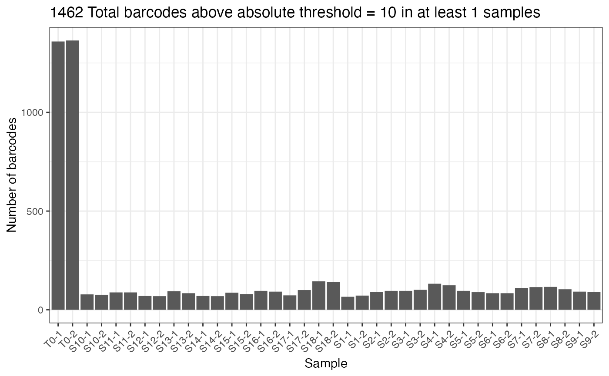

thresholdCounts.RdFilter barcodes meeting a given absolute (total read count) or relative (proportion based) abundance level Optionally plot number of barcodes detected using this threshold in each sample.
thresholdCounts(
dgeObject,
threshold = 10,
type = "absolute",
minSamples = 1,
plot = FALSE,
group = NULL,
order = TRUE
)DGEList object with barcode counts.
The threshold to use. If type = "relative", must a float between 0 & 1. Default = `10`
Threshold type to use (string). Must be one of "absolute" or "relative". Default = `absolute`.
Minimum number of samples a barcode must meet threshold to remain in dataset (integer). Default = `1`.
Return plot instead of filtered data (boolean). Default = `FALSE`.
Optional, column name in sample metadata to color samples by (string).
Order samples by group (boolean). Default = `TRUE`.
Returns a filtered DGEList object.
data(test.dge)
thresholdCounts(test.dge, type = "absolute", threshold = 10)
#> DGEList dimensions pre-threshold
#> [1] 1639 38
#> DGEList dimensions post-threshold
#> [1] 1462 38
#> An object of class "DGEList"
#> $samples
#> Sample Experiment Group PCR_Replicate Treatment group
#> T0-1 T0-1 test_01 T0 1 T0 T0
#> T0-2 T0-2 test_01 T0 2 T0 T0
#> S10-1 S10-1 test_01 10_High_dose 1 High_dose 10_High_dose
#> S10-2 S10-2 test_01 10_High_dose 2 High_dose 10_High_dose
#> S11-1 S11-1 test_01 11_Vehicle 1 Vehicle 11_Vehicle
#> lib.size norm.factors Sample BC.count
#> T0-1 3584606 1 T0-1 1359
#> T0-2 3349340 1 T0-2 1364
#> S10-1 4114186 1 S10-1 78
#> S10-2 4196458 1 S10-2 76
#> S11-1 2907500 1 S11-1 88
#> 33 more rows ...
#>
#> $counts
#> Samples
#> Tags T0-1 T0-2 S10-1 S10-2 S11-1 S11-2 S12-1 S12-2 S13-1 S13-2 S14-1 S14-2
#> BC_1 175 79 0 0 0 0 0 0 0 0 0 0
#> BC_13 1458 834 0 0 0 0 0 0 0 0 0 0
#> BC_99 1155 1554 0 0 0 0 0 0 0 0 0 0
#> BC_120 285 184 0 0 0 0 0 0 0 0 0 0
#> BC_426 116 46 0 0 0 0 0 0 0 0 0 0
#> Samples
#> Tags S15-1 S15-2 S16-1 S16-2 S17-1 S17-2 S18-1 S18-2 S1-1 S1-2 S2-1 S2-2
#> BC_1 0 0 0 0 0 0 0 0 0 0 0 0
#> BC_13 0 0 0 0 0 0 0 0 0 0 0 0
#> BC_99 0 0 0 0 0 0 0 0 105 205 0 0
#> BC_120 0 0 0 0 0 0 0 0 0 0 0 0
#> BC_426 0 0 0 0 0 0 0 0 0 0 0 0
#> Samples
#> Tags S3-1 S3-2 S4-1 S4-2 S5-1 S5-2 S6-1 S6-2 S7-1 S7-2 S8-1 S8-2 S9-1 S9-2
#> BC_1 0 0 0 0 0 0 0 0 0 0 0 0 0 0
#> BC_13 0 0 0 0 0 0 0 0 0 0 0 0 0 0
#> BC_99 0 0 0 0 0 0 0 0 0 0 0 0 0 0
#> BC_120 0 0 0 0 0 0 0 0 0 0 0 0 0 0
#> BC_426 0 0 0 0 0 0 0 0 0 0 0 0 0 0
#> 1457 more rows ...
#>
thresholdCounts(test.dge, type = "absolute", threshold = 10, plot = TRUE)
#> DGEList dimensions pre-threshold
#> [1] 1639 38
#> DGEList dimensions post-threshold
#> [1] 1462 38
